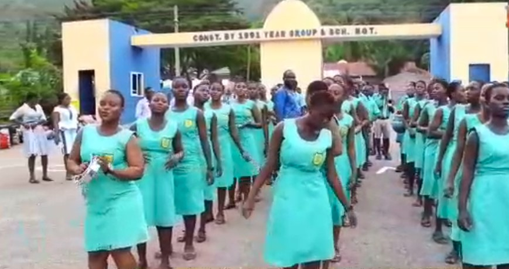

104
Anlo Technical Institute
Kpando Technical Instittute
St. Daniel Comboni Technical Inst. Liati
Have Tech. Inst., Anloga
Comboni Tech/Voc Inst., Sogakofe
Avenorpeme Technical Institute
Ve- Golokwati Technical Institute
Avenui-Awudome Technical Institute
Ave Technical Institute
Volta Tech Inst
Ho -Lokoe Technical Institute
Ho Technical Institute
Amedzofe Technical Institute
Tsibu Technical Institute
E.P. Tech/Voc Inst, Alavanyo
Caring Sisters Technical Inst., Tegbi
Atorkor Technical Institute
Kedzi Technical Institute
C.Y.O. Tech/Voc. Inst., Sovie
Toh-Kpalime Technical Institute
Klefe Technical Institute
Dzodze Technical Institute
Sogakope Technial Institute
Botoku Technical Insitute
Woe Technical Institute
Anfoeta Technical Institute
Mawuli School, Ho
OLA Girls Senior High, Ho
Bishop Herman College, Kpando
Agate Comm. Senior High
Anlo Senior High
Mafi-Kumasi Senior High/Tech
E.P.C. Mawuko Girls Senior High
Awudome Senior High, Tsito
Abutia Senior High/Tchnical
St. Mary's Sem.& Senior High School, Lolobi
Keta Senior High/Tech.
Kpando Senior High.
Vakpo Senior High
Peki Senior High
Tongor Senior High Tech.
Sogakofe Senior High
Adaklu Senior High
Leklebi Senior High
Ve Comm. Senior High
Jim Bourton Mem Agric. Senior High, Logba Adzokoe
Ziope Senior High Sch.
Agotime Senior High
Akatsi Senior High/Tech
Ave Senior High
Avenor Senior High
Atiavi Senior High/Tech
Volta Senior High School
Tsiame Senior High
Zion Senior High, Anloga
Abor Senior High
Keta Business College
Anlo Awomefia Senior High, Anyako
Anlo Afiadenyigba Snr High
Adidome Senior High
Shia Senior High/Tech
Sokode Senior High/Tech
Taviefe Senior High
Ziavi Senior High/Tech
Tanyigbe Senior High
Kpedze Senior High
Avatime Senior High
Tsito Senior High/Tech
Akome Senior High/Tech.
Dzolo Senior High
E. P. Senior High
Afadjato Senior High/Tech., Gbledi-Gborgame
Alavanyo Senior High/Tech.
Santa Esther Girls' Senior High, Wli
Afife Senior High Tech.
Dzodze Penyi Senior High
Wovenu Senior High Technical
Weta Senior High/Tech.
St. Paul's Senior High, Denu
Klikor Senior High/Tech.
Some Senior High
Three Town Senior High, Denu
Aflao Community SHTS
Anfoega Senior High
Vakpo Senior High/Tech
Volo Comm. Senior High
Battor Senior High
Dofor Senior High
Mepe St. Kizito Senior High/Tech.
Aveyime Battor Senior High/Tech.
Kpeve Senior High Tech
Peki Senior High/Technical
St. Catherine Girls Snr High, Agbakorpe
Dabala Senior High/Tech.
Gbekor Senior High School